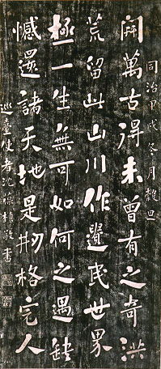

義助慰安婦
—— 李敖百件珍藏義賣藝術品（第80件）
品 名： H10. 台灣史拓聯（沈葆楨） 預估價： 20 萬 成交價： （保留） 說 明： 本件作品為清朝同治甲戌年（距今一百二十三年前），巡台使者沈葆楨為鄭成功所作的對聯。沈葆楨為林則徐女婿，是清朝著名的殺人不手軟的大臣。鄭成功原先被清朝定位為叛亂份子，因為他一天到晚想要反清復明，還曾一路攻打到南京，惜未成功。隨著時間的流逝，一兩百年後人們的觀念也跟著改變，清朝政府不再視鄭成功為叛逆份子，而肯定他是明朝的忠臣；而為了鼓勵忠臣義士的觀念，清朝政府准許設立延平郡王祠，清朝官員也可撰聯讚美鄭成功。本幅對聯，上聯寫當時台灣的地理情況，下聯則歌頌鄭成功為「刱格完人」（「刱」通「創」），是對失敗英雄的最好禮讚。
